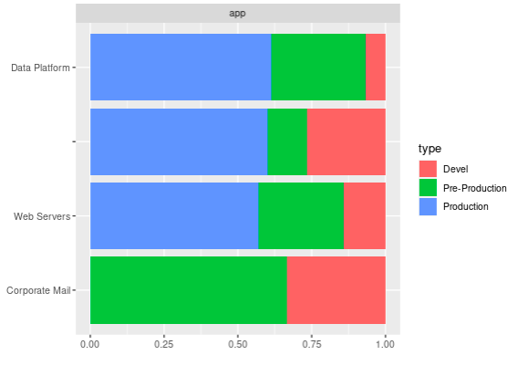
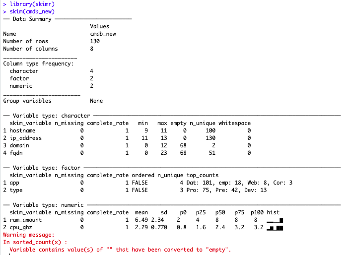

Intro
(It’s been a few weeks, taking some time off to recharge batteries before I get myself into a master… So I thought it would be a good idea.)
Anyhow, to the point: Many a time, when working with data, the first thing will be to “look at it”. Then maybe you’ll need to clean up some stuff (it’s often the case, in my experience).
So I’ve done that quite a few times by now. Some of the past Blog entries were around that very subject (here and here). But it’s tedious, and I started working on some functions of my own to do these things… Until I came across an entry on LinkedIn, where someone was praising skimr, which seemed very promising to begin with. Looking further into the topic of helping myself “prepare” a data analysis, I found the package DataExplorer.
But as we know, it’s not enough to read about these things, one needs to test them 🙂
Before we start
DataExplorer somehow requires igraph. igraph is nice, but as it turns out, it requires a package on the box running R that wasn’t there (I still use my tuned Docker containers, using rocker as the base image).
So first of, to work with DataExplorer on rocker/rstudio, you’ll need to install that package:
apt-get install libglpk-devThen only will you be able to do:
library(DataExplorer)Let’s keep going now
Good. So why all the fuss about that DataExplorer package?
Let me re-use some old “demo CMDB” generator to prepare some dummy data with a few common issues. (Over time, I’ve seen MANY more issues, but that will have to do for this test).
Using that, it should be easy to get to something like so:
> head(cmdb)
machine_name ip_address
1 WINDEMO01.KAIZEN-R.COM 192.168.1.17
2 WinDemo02 192.168.1.142
3 LinDemo03 192.168.1.252
4 WINDEMO04.KAIZEN-R.COM 192.168.1.72
5 LINDEMO05.KAIZEN-R.COM 192.168.1.33
6 LINDEMO06.KAIZEN-R.COM 192.168.1.187
> head(cmdb_apps)
machine_name app type
1 WinDemo01 Data Platform Production
2 WinDemo02 Data Platform Production
3 LinDemo03 Data Platform Pre-Production
4 WinDemo04 Devel
5 LinDemo05 Devel
6 LinDemo06 Data Platform ProductionWhich will have to do.
Then it all is rather simple: Let’s use the help (a.k.a. “RTFM”). So let’s try a few things:
> DataExplorer::plot_bar(cmdb_apps)
1 columns ignored with more than 50 categories.
machine_name: 100 categoriesGives the following:

Now it might not look like much, but believe me: It’s easier here (1 simple line of code) than it is doing it manually (and actually, I think it’s easier than doing the same thing in Excel, so there: Hurra for R!)
With the same data, if you have a factor column (which I here just forced, it made sense in this case), you can then see things by groups of such factors in one go:
> cmdb_apps[] <- lapply(cmdb_apps, as.factor)
> DataExplorer::plot_bar(cmdb_apps, by = "type")
1 columns ignored with more than 50 categories.
machine_name: 100 categories
Once again, the key of the matter is that those are one-liners!
Not everything can be automated
Unfortunately it’s not ALL going to be that easy. So in order to look a bit further into the powers of DataExplorer, I require some data with more… Columns, to begin with. Thankfully, we already have more columns, only in two different data frames. Let’s merge them… But wait! They should merge on the same column name easily if it weren’t for the difference in naming the machines!
So right there, something to be done…
It requires a bit of magic, but it’s feasible:
library(stringr)
library(magrittr)
cmdb_new <- cmdb
cmdb_new$machine_name %<>% tolower()
cmdb_new$hostname <- sapply(cmdb_new$machine_name, function(x) {
found_pos <- str_locate(x, "\\.")[[1]]
if(is.na(found_pos)) return(x)
str_sub(x, end = found_pos - 1)
})
cmdb_new$domain <- sapply(cmdb_new$machine_name, function(x) {
found_pos <- str_locate(x, "\\.")[[1]]
if(is.na(found_pos)) return("")
str_sub(x, start = found_pos + 1)
})
cmdb_new$fqdn <- sapply(1:nrow(cmdb_new), function(x) {
if(cmdb_new$domain[x] == "") return("")
paste0(cmdb_new$hostname[x], ".", cmdb_new$domain[x])
})
cmdb_new$machine_name <- NULL
cmdb_apps$machine_name %<>% tolower()Which gives us something a bit more compatible (see the “hostname” in cmdb_new, and “machine_name” in cmdb_apps…)
> head(cmdb_new, n = 2)
ip_address hostname domain fqdn
1 192.168.1.17 windemo01 kaizen-r.com windemo01.kaizen-r.com
2 192.168.1.142 windemo02
> head(cmdb_apps, n = 2)
machine_name app type
1 windemo01 Data Platform Production
2 windemo02 Data Platform Production
> cmdb_new <- merge(cmdb_new, cmdb_apps, by.x = "hostname", by.y = "machine_name", all = TRUE)
> head(cmdb_new)
hostname ip_address domain fqdn app type
1 lindemo010 192.168.1.158 Data Platform Production
2 lindemo010 192.168.1.155 Data Platform Production
3 lindemo0100 192.168.1.47 Data Platform Devel
4 lindemo011 192.168.1.75 kaizen-r.com lindemo011.kaizen-r.com Data Platform Production
5 lindemo012 192.168.1.94 Data Platform Production
6 lindemo012 192.168.1.236 Data Platform ProductionNow that’s better, let’s have a look shall we?
> DataExplorer::introduce(cmdb_new)
rows columns discrete_columns continuous_columns all_missing_columns total_missing_values
1 130 6 6 0 0 0
complete_rows total_observations memory_usage
1 130 780 27464Now we might want to have some numerical value in there somewhere, just for testing. In the context of a CMDB of Systems, maybe the amount of RAM per system could make sense, and CPUs speeds. Let’s throw that in:
rams_df <- data.frame(hostname = unique(cmdb_new$hostname), ram_amount = sample(c(2,4,8), size = length(unique(cmdb_new$hostname)), replace = TRUE, prob = c(1,1,3)))
cmdb_new <- merge(cmdb_new, rams_df, all.x = TRUE)
cpus_df <- data.frame(hostname = unique(cmdb_new$hostname), cpu_ghz = sample(c(1.6,2.4,0.8,3.2), size = length(unique(cmdb_new$hostname)), replace = TRUE, prob = c(2,3,1,3)))
cmdb_new <- merge(cmdb_new, cpus_df, all.x = TRUE)And now, DataExplorer will find on its own the numeric variables and help us have a quick glance at them:
DataExplorer::plot_histogram(cmdb_new)
DataExplorer::plot_boxplot(cmdb_new, by = "app")

Even better than all of the above, DataExplorer provides a function (1 liner) to do all of the above and more and generate one report, from one data frame… I mean, NICE STUFF!
But I’ll let you explore that last trick on your own.
A simple (but great) alternative: skimr
So just because I’ve seen it, and it is as simple as it gets, BUT it is very useful to get a sense of a data.frame in seconds:

Hell it even decided on its own: Empty strings “” count as empty cells to it! That’s just the kind of things one needs to speed up data sets reviews 🙂
Conclusions
Some things will still need to be manual. EDA, data cleaning, data imputation, etc. all require us to LOOK AT THE DATA.
That doesn’t necessarily mean however that one needs to program from scratch all the nifty details about understanding and fixing some dataset each time.
One of the great things of R, is its community of developers that create a plethora of great packages for the rest of us to be able to do our job faster, and easier.
So Kudos to the R Community, thanks all! (I don’t say that enough…)